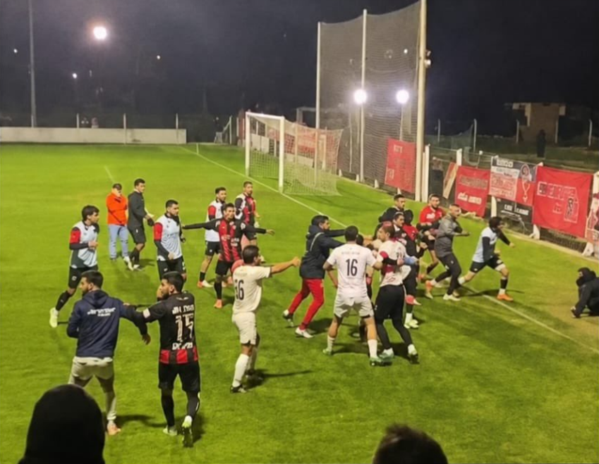

Escándalo en OFI
Semifinal de OFI terminó en batalla campal: golpes de puño y patadas
El encuentro quedó marcado por graves incidentes y enfrentamientos entre futbolistas de ambos equipos.
Fútbol del interior · 16 de agosto de 2026

Juanicó de Canelones clasificó a la final de la Divisional B de la Copa Nacional de Clubes de OFI tras derrotar a San Lorenzo de Young 5-4 por penales, luego del empate 2-2 en el resultado global. La vuelta se jugó en el estadio Dickinson, donde se registraron incidentes al término del partido.
El equipo canario, que perdió 2-0 en la ida en Canelones, se repuso y ganó como visitante por la misma diferencia. Ese resultado le permitió forzar los penales e imponerse. De esta manera, enfrentará en la definición a Ceibal de Salto, que eliminó a Quilmes de Florida.
Sobre el final del encuentro se generaron incidentes entre los protagonistas. Según muestran los videos difundidos en redes sociales, futbolistas de ambos equipos protagonizaron empujones, forcejeos, golpes de puño y patadas en medio de un tumulto que involucró a varias personas dentro del campo de juego.
La situación se extendió durante algunos instantes, mientras otros futbolistas e integrantes de los equipos intentaban separar y calmar a los involucrados.